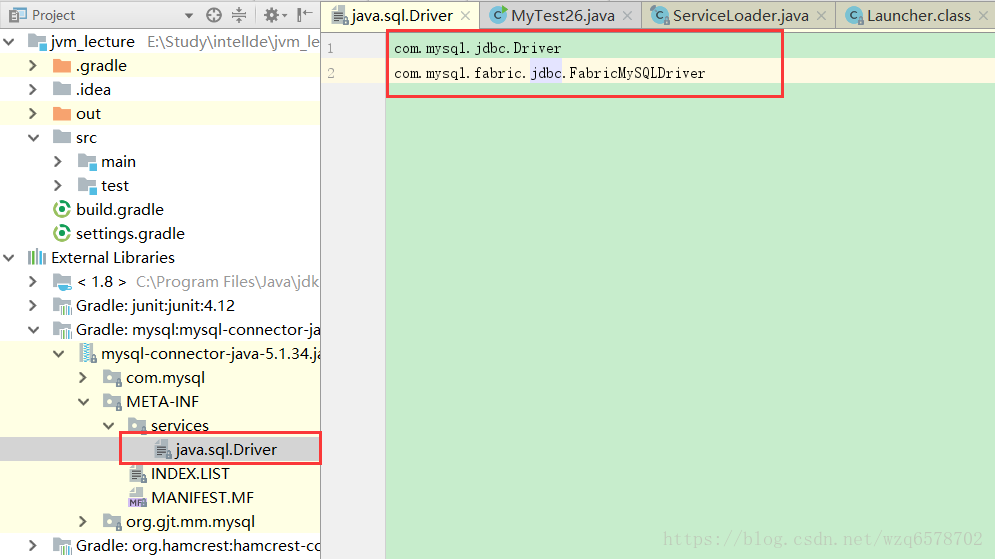

线程类上下文加载器的一般使用模式(获取-使用-还原)
1 | ClassLoader classLoader = Thread.currentThread().getContextClassLoader(); |
myMethod里面则调用了Thread.currentThread().getContextClassLoader(),获取当前线程的上下文加载器做某些事情。
如果一个类由类加载器A加载，那么这个类的依赖类也是由相同的类加载器加载的（如果该依赖类之前没有被加载过的话）
ContextClassLoader的作用就是为了破坏java的类加载委托机制。
当高层提供统一的接口让底层去实现，同时又要在高层加载（或实例化）底层的类时，就必须要通过线程上下文类加载器
来帮助高层的ClassLoader找到并加载该类。
1 | public class MyTest26 { |
运行结果：
1 | driver: class com.mysql.jdbc.Driverloader: sun.misc.Launcher$AppClassLoader@18b4aac2 |
我们可以看到ServiceLoader找到了mysql的两个驱动，这两个驱动都是由系统类加载器加载的，当前线程的上下文加载器默认也是系统类加载器，ServiceLoader是由启动类加载器加载，但是程序是怎样找到mysql的两个驱动的呢？我们没有在程序里边设置任何的属性或者路径之类的东西让程序能找到mysql的驱动，那么我们只能研究一下ServiceLoader的源码和doc看一下他们的原理：
public final class ServiceLoader extends Object implements Iterable A simple service-provider loading facility. 这是一个简单服务提供者的设施 A service is a well-known set of interfaces and (usually abstract) classes. A service provider is a specific implementation of a service. The classes in a provider typically implement the interfaces and subclass the classes defined in the service itself. Service providers can be installed in an implementation of the Java platform in the form of extensions, that is, jar files placed into any of the usual extension directories. Providers can also be made available by adding them to the application's class path or by some other platform-specific means.服务是一个已知的接口和类（通常是抽象类）的集合，服务提供者就是服务的的一种具体实现，服务提供者通常去实现服务的接口和服务自身定义的类的子类。服务提供者可以以一种扩展的形式被安装到java平台的实现，有jar包的形式，文件形式等放到任何的扩展目录下边，服务提供者可以通过加在应用的classpath路径下边或者其他特定平台的手段让其变的可用。
For the purpose of loading, a service is represented by a single type, that is, a single interface or abstract class. (A concrete class can be used, but this is not recommended.) A provider of a given service contains one or more concrete classes that extend this service type with data and code specific to the provider. The provider class is typically not the entire provider itself but rather a proxy which contains enough information to decide whether the provider is able to satisfy a particular request together with code that can create the actual provider on demand. The details of provider classes tend to be highly service-specific; no single class or interface could possibly unify them, so no such type is defined here. The only requirement enforced by this facility is that provider classes must have a zero-argument constructor so that they can be instantiated during loading.出于加载的目的，服务表现为单个的类型，也就是说一个单个的接口或者抽象类（抽象类的实现类可以是被使用的，但是不是推荐的），给定服务的提供者包含一个或多个具体的实现类用来扩展服务类型，通过特定于提供者的数据或者代码。提供者通常不是提供者本身，而是以一种代理的形式，包含了足够的信息来确定提供者满足了特定的需求，并且加上了一些代码根据需要创建实际的提供者，服务提供者的细节和服务是挂钩的，没有单个的接口或者类将他们统一起来，因此这种类型并没有定义在这里面，对于这个基础设施来说他说施加的唯一需求就是提供者的类需要有一个无参构造器，这样就可以在加载的时候实例化他们。
A service provider is identified by placing a provider-configuration file in the resource directory META-INF/services. The file's name is the fully-qualified binary name of the service's type. The file contains a list of fully-qualified binary names of concrete provider classes, one per line. Space and tab characters surrounding each name, as well as blank lines, are ignored. The comment character is '#' ('\u0023', NUMBER SIGN); on each line all characters following the first comment character are ignored. The file must be encoded in UTF-8.服务提供者是通过将服务提供者的配置文件放在资源目录的【META-INF/services】下边去标识的，这个文件的名字是服务类型的全限定名，文件的内容是一个具体的实现者的全限定名的列表，每一行一个实现者，围绕的空格和tab都会被忽略掉，同样空行也会被忽略掉，注解字符是【#】，在每一行#后边的都会被忽略掉，这个文件必须是UTF-8编码的。
If a particular concrete provider class is named in more than one configuration file, or is named in the same configuration file more than once, then the duplicates are ignored. The configuration file naming a particular provider need not be in the same jar file or other distribution unit as the provider itself. The provider must be accessible from the same class loader that was initially queried to locate the configuration file; note that this is not necessarily the class loader from which the file was actually loaded.如果一个具体的实现类在多个文件出现或者同一个文件出现多次，那么重复的部分会被忽略掉，配置文件指定的提供者不需要在同一个jar或者其他的分发单元里边，提供者的类必须可以让定位配置文件的那个加载器去加载，
Providers are located and instantiated lazily, that is, on demand. A service loader maintains a cache of the providers that have been loaded so far. Each invocation of the iterator method returns an iterator that first yields all of the elements of the cache, in instantiation order, and then lazily locates and instantiates any remaining providers, adding each one to the cache in turn. The cache can be cleared via the reload method. Service loaders always execute in the security context of the caller. Trusted system code should typically invoke the methods in this class, and the methods of the iterators which they return, from within a privileged security context.提供者是延迟定位和实例化的，而是按需要进行，一个服务提供者维持了一份最近加载过的提供者的缓存，而每次对于iterator方法的调用都会返回一个迭代器，迭代的是之前缓存的所有的元素，并且是以实例化的顺序返回，并且是延迟的定位和加载其他剩余的提供者，按照顺序添加到缓存里边，缓存可以通过reload方法清空。
【缓存其实就是ServiceLoader的成员变量private LinkedHashMap<String,S> providers = new LinkedHashMap<>();】
服务的加载总是在调用的时候在安全的上下文进行，信任的系统可以调用类中的代码，迭代器可以从安全的上下文返回。
Instances of this class are not safe for use by multiple concurrent threads.
当前类并不是线程安全的一个类
Unless otherwise specified, passing a null argument to any method in this class will cause a NullPointerException to be thrown.
除非指定了，否则向这个类的任何一个方法传递null的参数都会导致空指针异常。
Example Suppose we have a service type com.example.CodecSet which is intended to represent sets of encoder/decoder pairs for some protocol. In this case it is an abstract class with two abstract methods:
举例如果一个服务的类型是 com.example.CodecSet 用来表示某个协议的编解码器的集合，在这种情况下，这个抽象类包含2个方法：
public abstract Encoder getEncoder(String encodingName);
public abstract Decoder getDecoder(String encodingName);
1 | public static Encoder getEncoder(String encodingName) { |
1 | public final class ServiceLoader<S> implements Iterable<S> |
其下的文件名字就是服务的名字，比如数据库驱动的服务是java.sql.Drive，我们在mysql的jar包下可以看到这个文件，文件里边的内容是具体的实现类的全限定名：

所以我们上面的程序的打印结果是：
1 | driver: class com.mysql.jdbc.Driverloader: sun.misc.Launcher$AppClassLoader@18b4aac2 |
ServiceLoader是由启动类加载器加载的，为什么mysql的驱动是由系统类加载器加载呢？。。。。下一章介绍这个知识点。